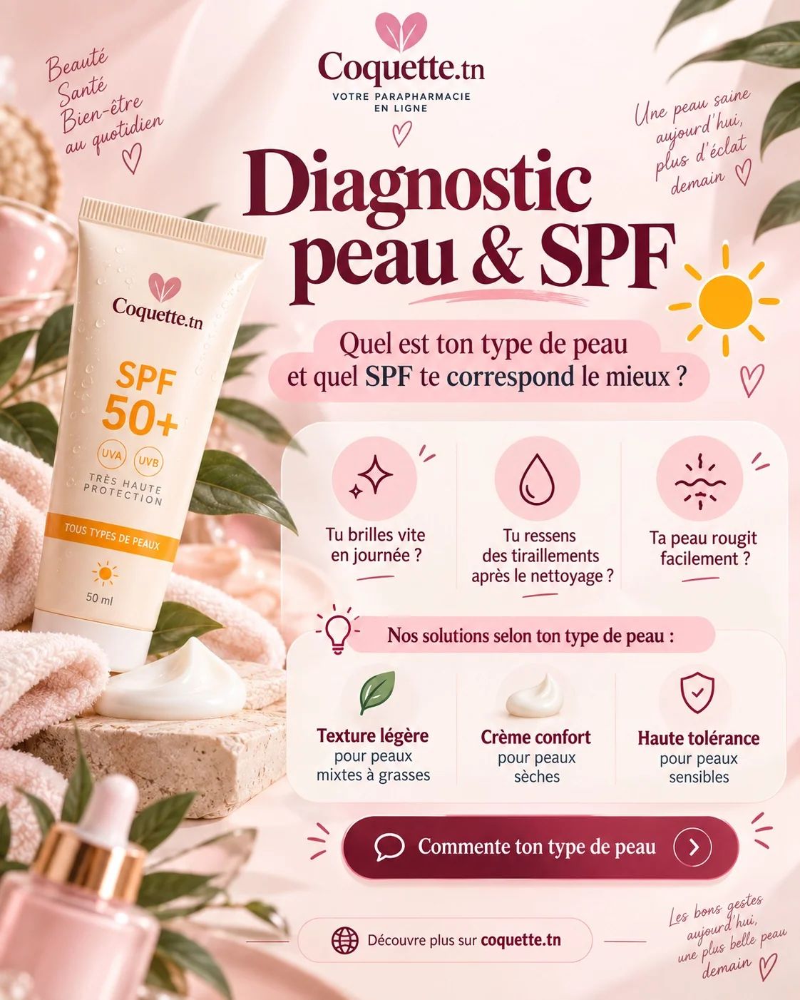
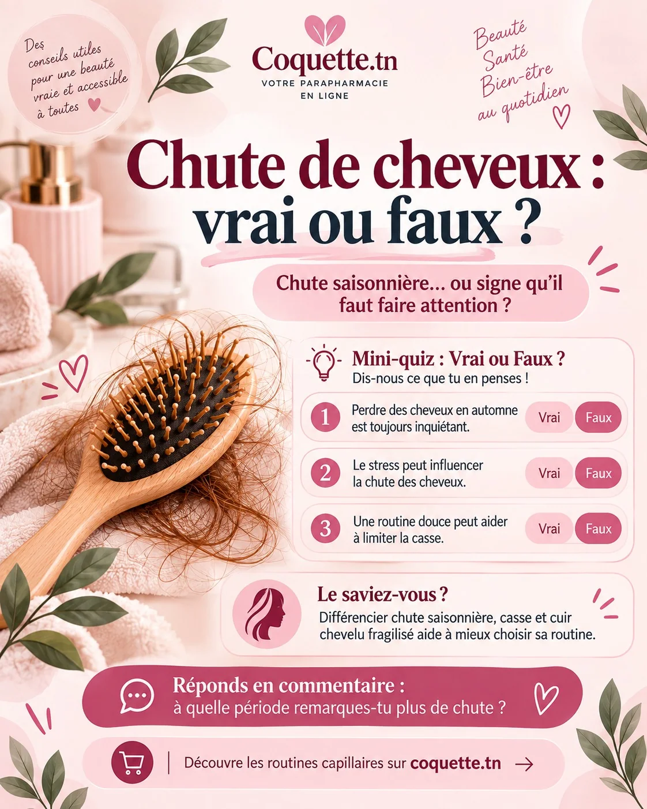
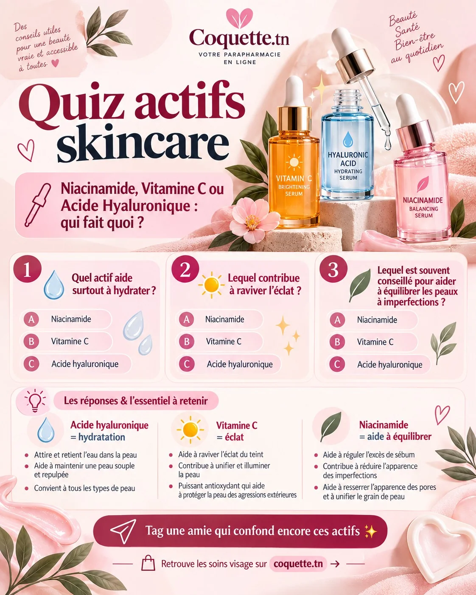
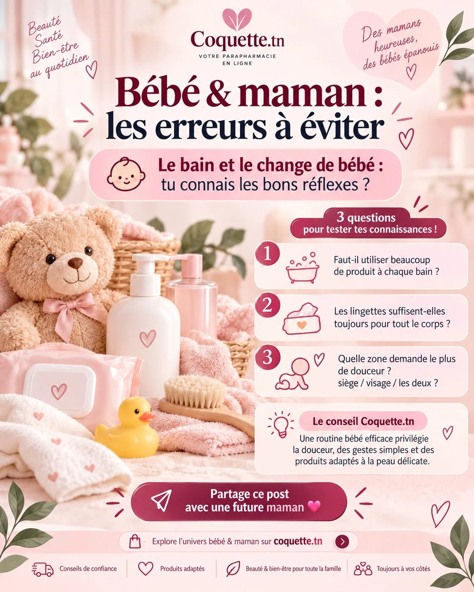

← RETOUR AUX PROJETS
Coquette.tn / Éducation & conseil2026 — CREATIVE WORK
Conseils beauté & contenus éducatifs
Publications pédagogiques qui simplifient des sujets liés aux routines de soin, à la protection solaire et aux produits dermocosmétiques.
MARQUE
Coquette.tn
OBJECTIF CRÉATIF
Créer des contenus utiles et faciles à consulter, et renforcer la cohérence d’une communication de marque.
MON RÔLE
Création des compositions graphiques et des supports éditoriaux.





DERRIÈRE
LES VISUELS.
Créer des contenus utiles et faciles à consulter, et renforcer la cohérence d’une communication de marque.
- Sélection de thèmes éducatifs accessibles
- Organisation du contenu en blocs et messages courts
- Déclinaison d’une identité douce sur plusieurs sujets
Ces publications sont présentées à titre de création graphique ; elles ne remplacent pas un avis professionnel de santé.